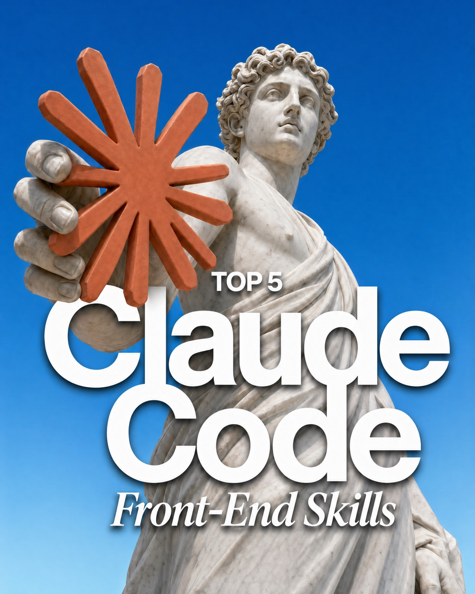
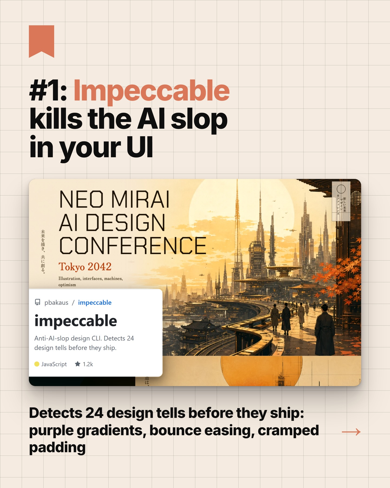
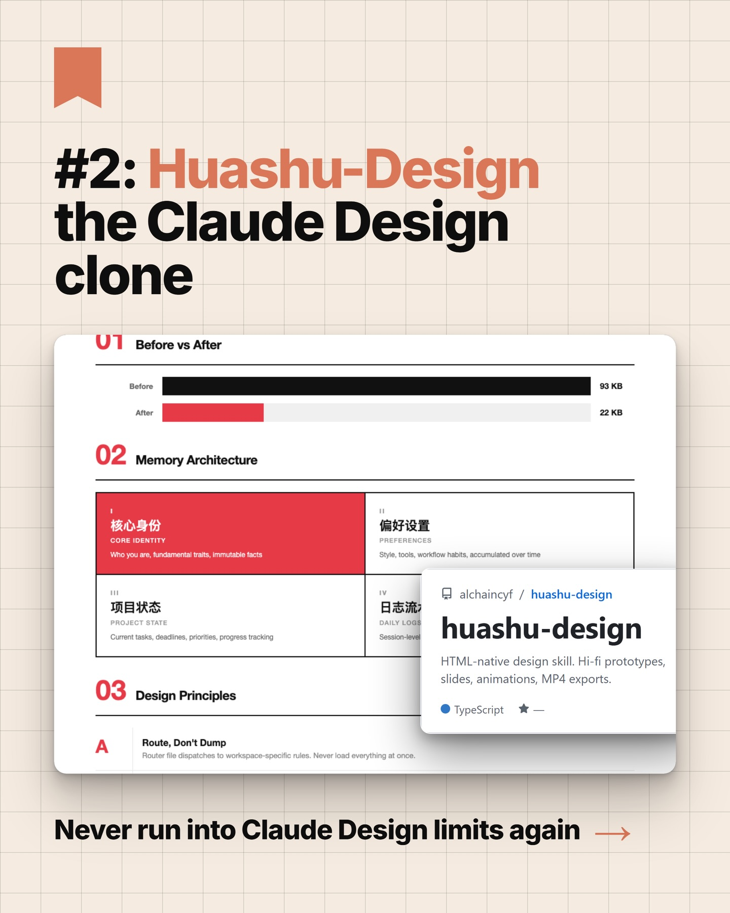
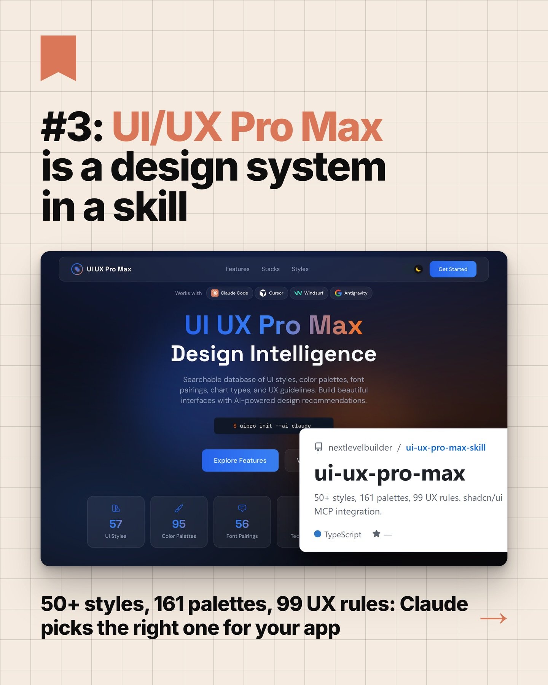
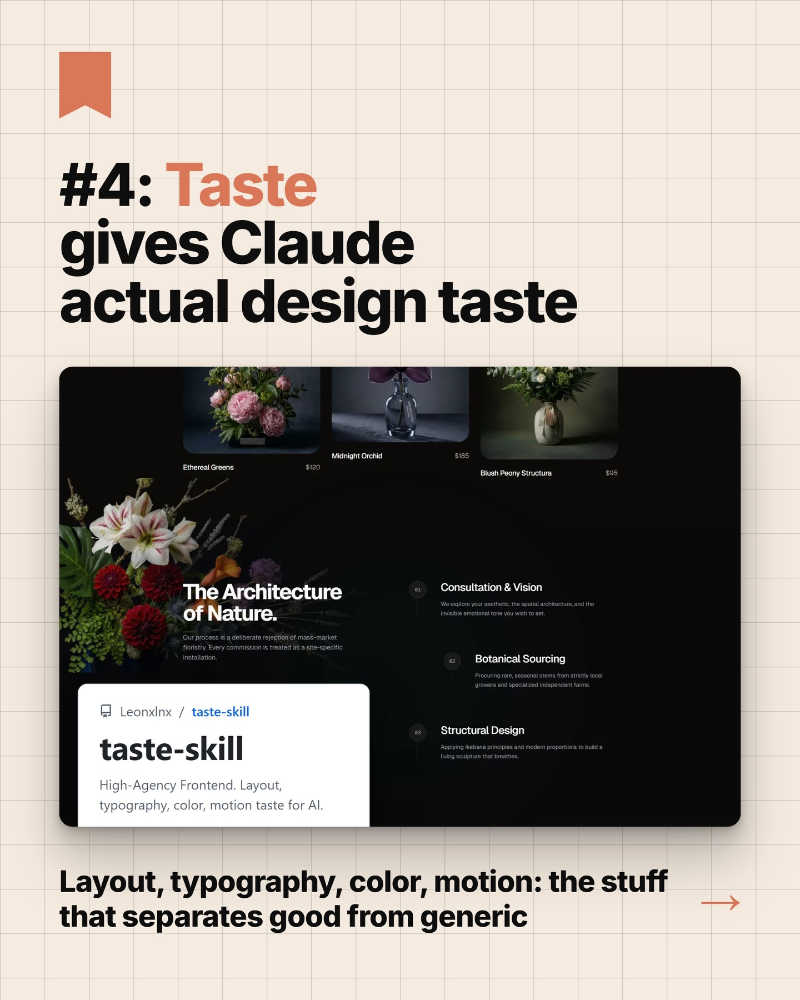
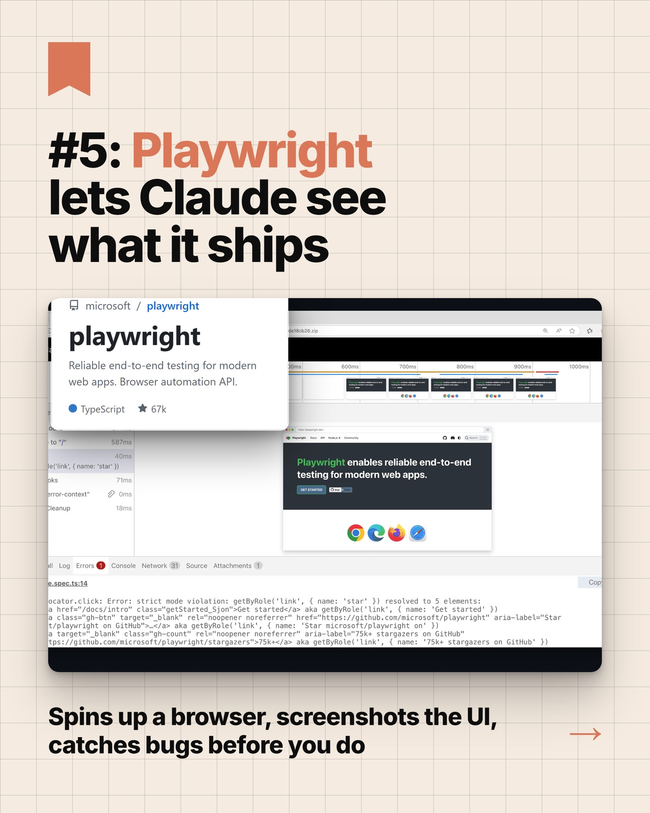

Instagram Post

Comment “agent” to get my Claude Code guides
carousel (7 slides) (enriched by ClaudeClaw)
Summary
TOP 5 Claude® Code Front-End Skills | #1: Impeccable kills the AI slop in your UI NEO MIRAI AI ... | #2: Huashu-Design the Claude Design clone 01 Before vs Af... | #3: UI/UX Pro Max is a design system in a skill UI UX Pro... | #4: Taste gives Claude actual design taste Iclana Greens ... | #5: Playwright lets Claude see what it ships microsoft / ... | SAVE SHARE FOLLOW @CHASE.AI
Caption
Comment “agent” to get my Claude Code guides
1
TOP 5 Claude® Code Front-End Skills
A white marble classical statue of a male figure holds an orange star-shaped object against a clear blue sky, with text overlaid on the image.
2
#1: Impeccable kills the AI slop in your UI NEO MIRAI AI DESIGN CONFERENCE Tokyo 2042 Illustration, interfaces, machines, optimism 未来を創る、AIとデザイン AIとデザイン pbakaus / impeccable impeccable Anti-AI-slop design CLI. Detects 24 design tells before they ship. JavaScript 1.2k Detects 24 design tells before they ship: purple gradients, bounce easing, cramped padding
A presentation slide features a futuristic city with tall buildings and people walking, overlaid with text about an "AI Design Conference" and a tool called "Impeccable" for detecting design flaws.
3
#2: Huashu-Design the Claude Design clone 01 Before vs After Before 50 KB After 22 KB 02 Memory Architecture 核心身份 CORE IDENTITY Who you are, fundamental traits, immutable facts 偏好设置 PREFERENCES Style, tools, workflow habits, accumulated over time 项目状态 PROJECT STATE Current tasks, deadlines, priorities, progress tracking 日志流 DAILY LOG Session-level alchaincyf / huashu-design huashu-design HTML-native design skill. Hi-fi prototypes, slides, animations, MP4 exports. TypeScript 03 Design Principles A Route, Don't Dump Router file dispatches to workspace-specific rules. Never load everything at once. Never run into Claude Design limits again
A digital slide or infographic titled "#2: Huashu-Design the Claude Design clone" displays a white interface with sections on "Before vs After," "Memory Architecture," and "Design Principles," alongside a pop-up window detailing "huashu-design" capabilities.
4
#3: UI/UX Pro Max is a design system in a skill UI UX Pro Max Features Stacks Styles Get Started Works with Claude Code Cursor @angegranty UI
5
#4: Taste gives Claude actual design taste Iclana Greens $120 Midnight Orchid $185 Blush Peony Structure $165 The Architecture of Nature. Our purpose is a deliberate curation of mood-market flowers. Every commission is created to a site-specific installation. Consultation & Vision We explore your aesthetic, the spatial architecture, and the broader emotional tone you want to evoke. Botanical Sourcing Procuring rare seasonal stems from strictly local growers and specialized independent farms. Structural Design Applying balance principles and master craftsmanship to build a living sculpture that breathes. Leonainx / taste-skill taste-skill High-Agency Frontend. Layout, typography, color, motion taste for AI. Layout, typography, color, motion: the stuff that separates good from generic
A social media post features a large title about "Taste" and "Claude," overlaying a screenshot of a dark-themed website showcasing floral arrangements and design services, with a "taste-skill" card and a concluding sentence at the bottom, all set against a light grid background.
6
#5: Playwright lets Claude see what it ships microsoft / playwright playwright Reliable end-to-end testing for modern web apps. Browser automation API. TypeScript 67k Playwright enables reliable end-to-end testing for modern web apps. Log Errors Console Network Source Attachments locator.click: Error: strict mode violation: getByRole('link', { name: 'star' }) resolved to 5 elements; locator.click: Error: strict mode violation: getByRole('
7
SAVE SHARE FOLLOW @CHASE.AI
A light beige grid-patterned background features large black text "SAVE SHARE FOLLOW" with orange arrows, a red bookmark icon, and a black oval button with "@CHASE.AI" and an orange arrow.
All slides




